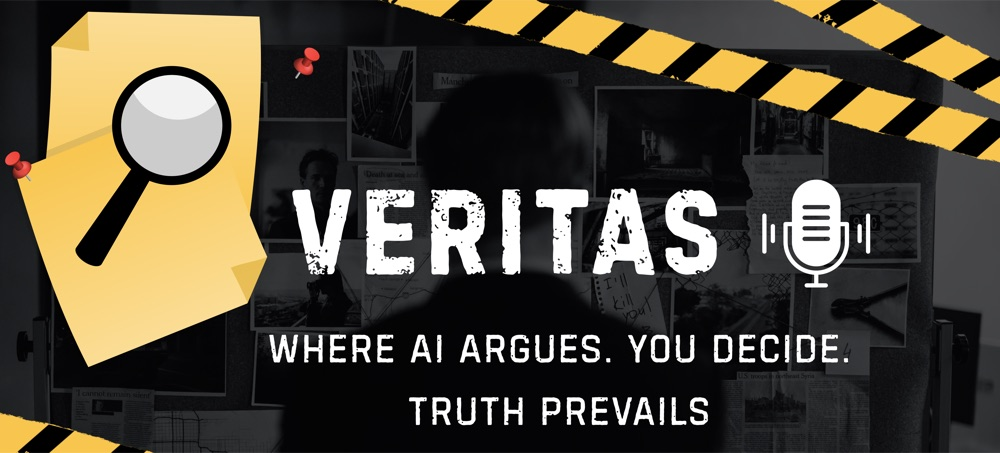

I am a researcher and creative technologist pursuing an MRes in Creative Computing at the University of the
Arts London. My work sits at the intersection of AI and creative practice — multimodal retrieval-augmented
generation, automatic drum transcription, and authorship in AI art. It builds on a quantitative foundation:
a BSc in Mathematics (UBC) and an MSc in Operational Research with Data Science (Edinburgh), plus hands-on
machine learning and data work in industry.
Yet my creative journey truly began in 2016, when I wrote my first poem and discovered an unparalleled sense of
fulfillment. Despite following a path in science and engineering, I have never lost my love for the creative arts.
Today I integrate photography, poetry, and design thinking into my work, marrying technical precision with
artistic expression.
02Publications
Research Projects
ACM Creativity & Cognition (C&C) 2026
A three-axis design framework for control and governance in multimodal retrieval-augmented generation (MRAG) for creative practice. Semi-structured interviews with 10 visual and sonic creators yielded design implications for provenance, interaction, and responsible reference-based generation.
ISMIR 2026
DITS — a domain-randomized synthetic drum dataset and procedural drum machine for Automatic Drum Transcription (ADT) that randomizes rhythm, timbre, tempo, swing, effects, and instrument co-occurrence. Ablation studies show improved robustness on sonically diverse contemporary drum loops and competitive performance against real-data ADT baselines.
Explainable AI for the Arts Workshop @ ACM C&C 2026
An examination of authorship, explainability, and curatorial agency in AI art, reading Botto as an agentic curatorial system where generation, ranking, voting, feedback, and recognition are recursively connected. It argues that authorship is distributed but asymmetrical — shaped through selection, model filtering, DAO voting, and the process by which one generated image becomes recognized as the artwork.
03Career
Work Experience
Calibrate transducers and manage the Microsoft Access database to maintain calibration records, test results, and equipment performance data.
Developed a Python script to automate data processing workflows in Origin, improving efficiency and reproducibility in geotechnical analysis.
Initiated an inter-lab comparison project using R, establishing frameworks for benchmarking and enhancing lab quality control across multiple locations.
Implemented a YOLO v9-based machine learning model for soil particle/grain detection, advancing automation in sediment analysis.
Conducted data analysis on pharmaceutical sales and distribution, leveraging Python (Pandas, NumPy) to analyse large datasets on product performance across regions.
Queried databases with SQL to extract inventory data, optimizing stock replenishment and reducing overstocking by 15%.
Presented key findings to senior management through Power BI and Tableau, highlighting the correlation between marketing strategies and sales growth.
Led one-on-one and group tutoring sessions for undergraduate-level calculus, algebra, and statistics.
Developed customized instructional approaches to clarify complex theories and foster solid analytical skills.
Guided students through exam preparations and coursework, enhancing academic performance.
Prepared course materials and weekly lab assignments for a variety of math modules.
Provided hands-on workshop support, helping students reinforce core mathematical principles.
Managed administrative duties, ensuring accurate maintenance of doctoral examination data.
Utilized Microsoft Excel for data collection, analysis, and record-keeping across multiple programs.
Researched the Chinese radiotherapy market, consolidating findings in Excel for further analysis.
Conducted in-depth interviews and maintained data integrity with SQL-based repositories.
Delivered final reports to Varian, supported by Power BI dashboards and PowerPoint slides.
Analyzed China's industrial robotics sector, performing DCF, SWOT, and P/S analyses for ZOA Robotics.
Explored various funding sources and created Power BI dashboards to guide investment decisions.
Used Python (Scikit-learn) data modeling and Tableau to predict emerging market segmentation trends.
04Academic
Education
Accolades: Dean's honor list (2020); Dean's list (2018)
Core Courses: Calculus I-IV, Linear Algebra, Linear Programming, Partial Differential Equations, Probability, Stochastic Process
Result: Merit
Core Courses: Fundamentals of Operational Research, Fundamentals of Optimization, Operational Research, Applied Machine Learning, Reinforcement Learning, Biomedical Data Science
Focus: Practice-based research at the intersection of artificial intelligence and creative practice — multimodal generative AI, music information retrieval, and the governance, explainability, and authorship of AI-driven creative systems.
05Toolkit
Technical Skills
Languages & Tools
Python
R
SQL
MATLAB
C++
JavaScript
Machine Learning & AI
Machine Learning
PyTorch
TensorFlow
Scikit-learn
Multimodal AI
Generative AI
LLMs (GPT, Claude, Gemini)
Prompt Engineering
LangChain
Data & Visualization
NumPy
Pandas
SciPy
Power BI
Tableau
Origin
Creative & Communication
Textile Design
Writing & Photography
Content Creation
Mandarin (Native)
English (Fluent)
06Selected Work
Project Experience
The written record — what each project does and the result it reached. Covers, live demos, and reports live in the Portfolio below.
Built a multi-agent LLM courtroom that performs a 15-minute Crown Court trial — prosecution and defence barristers, witnesses, the defendant, an LLM fact-checker, and a judge — orchestrated by a 14-state finite-state machine.
Added an eight-persona AI jury (GPT-4o and GPT-4o-mini) and a reasoning evaluator with fallacy detection; ships as a CLI, a FastAPI REST/WebSocket service, and a multi-bot group chat, backed by 200+ tests.
Built an interactive constellation mapping semantic similarity between anonymous survey responses: an embedding pipeline (OpenAI text-embedding-3-large at 256-dim Matryoshka, with a local BGE fallback) feeding UMAP projection, KMeans clustering, and nearest-neighbour links.
Rendered it as a real-time vanilla-JS Canvas galaxy — orbital drift, depth parallax, and strength-weighted glowing links — with five per-question views, deployed on GitHub Pages with an optional Express embeddings API.
Implemented a neural network from scratch in the browser — a 64→16→2 classifier with ReLU and softmax, real backpropagation and SGD (~1,000 parameters) and Xavier/He initialisation — that genuinely trains to separate shapes, with no ML libraries.
Rendered every neuron, weight, and gradient as flowing light and particles with p5.js (activation → brightness, weight → thickness, forward/backward pass → particle direction), with a live "show the math" mode, seed-reproducible runs, and interactive controls at ~60 FPS.
Fine-tuned a Qwen 7B instruct model on 100 self-written poems using LoRA, replicating style and imagery from title-based prompts.
Deployed lightweight model variants on Apple Silicon (MLX), CPU (GGUF for Ollama, LM Studio), and Docker/AWS for broad accessibility.
Built time-series anomaly detection and forecasting models for power systems using seq2seq and autoencoder architectures.
Achieved 90%+ detection accuracy with forecast deviations within 5%, supporting more reliable grid operation amid growing renewable energy integration.
Formulated a linear programming model in Xpress/Python to optimize placement and scheduling for EV charging stations.
Integrated city demand forecasts and spatial constraints, streamlining resource allocation and usage patterns.
Built a sentiment-classification pipeline benchmarking a fine-tuned RoBERTa model against classical baselines (Bag-of-Words, TF-IDF) on a corpus of 10K+ movie reviews.
RoBERTa reached 87.06% binary-classification accuracy, evaluated against Logistic Regression, SVM, and neural baselines with hyperparameter tuning.
Deployed Stable-Dreamfusion — a text-to-3D model generating detailed 3D objects from natural-language prompts — as a web app.
Used a pretrained 2D text-to-image diffusion model for text-to-3D synthesis, with no large-scale 3D dataset or separately-trained 3D model required.
Fine-tuned YOLOv9 for single-class rock detection with custom tiling augmentation, achieving precise boundary detection for irregularly shaped rocks across varied environments.
Expanded a 700-image dataset to 4,000+ training samples via a 256×256 tiling pipeline, reaching >90% precision with real-time inference at 30 FPS.
07Gallery
Portfolio
A selection of research, engineering, and creative work — filter by focus, or scroll through.

AI Courtroom (VERITAS)
A multi-agent LLM courtroom where barristers, witnesses, a judge, and an eight-persona AI jury stage a Crown Court trial — you deliberate, vote, and a four-part reveal scores your reasoning against the truth.
An interactive constellation where each star is an anonymous survey response and each link is shared meaning — semantic embeddings (UMAP + KMeans) rendered as a living vanilla-JS Canvas galaxy.
A from-scratch neural network that trains live in the browser — every neuron, synapse, and gradient rendered as flowing light with p5.js. AI made visible as algorithmic art.
A grid-based model for EV charging deployment in Dundee, dividing the city into 434 grids and recommending new charger installations to meet demand efficiently and cost-effectively.
Developed robust sentiment classification for movie reviews by integrating NLP and ML feature extraction, with RoBERTa-based model achieving 87.06% accuracy for binary classification.
Forecasting disruptions in power grid frequency data, achieving 90%+ anomaly detection accuracy with forecast deviations within 5% to enhance grid resilience and system management.
Implemented YOLOv9 fine-tuning for single-class rock detection with custom tiling augmentation, achieving precise boundary detection for irregularly shaped rocks across environments.
The making that runs alongside the research — recent mixed-media work and photography.
Inbox Archive: Learning to Sound Like Myself
Inkjet print on paper with thread · 5 × A4 · 2026 Selected for The Mosaic of Becoming — Nunnery Gallery, London
Years of my own emails as an international student — first in Canada, now in the UK — stitched through with thread: a sentence interrupted like a scar, then held together like a repair. Across the pages the shift is gradual but clear — from writing to be accepted, to writing to be understood. I am not correcting my grammar; I am correcting posture.
Read the full statement
I grew up in China and, until I was eighteen, did not communicate in English. Studying abroad, English became the place where I had to prove myself every day: in classrooms, forms, housing, appointments, friendships. As the dates move forward, the edits shift from “wrong English” to “wrong self.” This work records that change — from performing politeness to finding a voice that feels like my own.
Borrowing the visual language of administration, correction, and confidentiality, it turns ordinary correspondence into an archive of cultural adjustment. Migration often happens through procedures rather than narratives: before you feel settled, you must become readable — you request access, confirm status, ask for help, report an error, wait for a reply. Belonging is built through small procedural acts and moments of response, when someone understands you and answers back.
Other work
Ink and brush, paint, and mixed media — pieces made between projects.